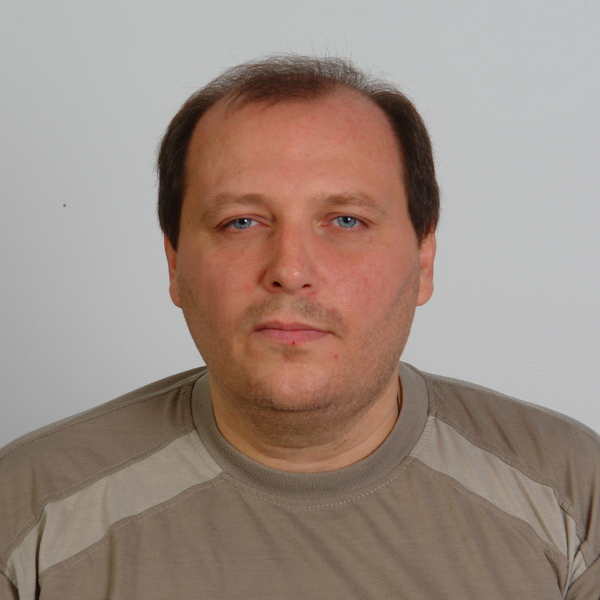

Зовут меня
В 1990 году окончил среднюю школу в городе Зверево, отучился на телемастера в ДОСААФ и в 1991 году поступил в Шахтах на факультет "Радиотехника" в ШТИБО / ДГАС / ЮРГУЭС / ИСОиП ДГТУ, и да, столько раз менялось название этого института. Таким образом, по профессии я радиоинженер.
